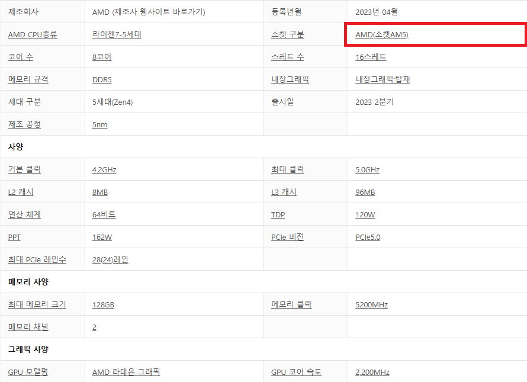

부품간 호환성 확인 - 부품 별 선택방법
부품간 호환성 확인
가장 기본적인 부품 선택 순서인 CPU - 메인보드 - RAM - 저장장치 - 그래픽카드 - 파워 - 케이스 - 쿨러 순서로 이야기한다.



이것은 첫 번째 이미지입니다.
가장 기본적인 부품 선택 순서인 CPU - 메인보드 - RAM - 저장장치 - 그래픽카드 - 파워 - 케이스 - 쿨러 순서로 이야기한다.